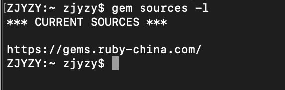
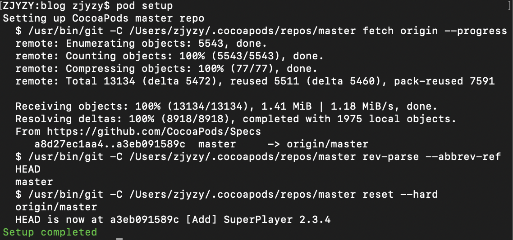
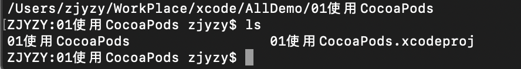
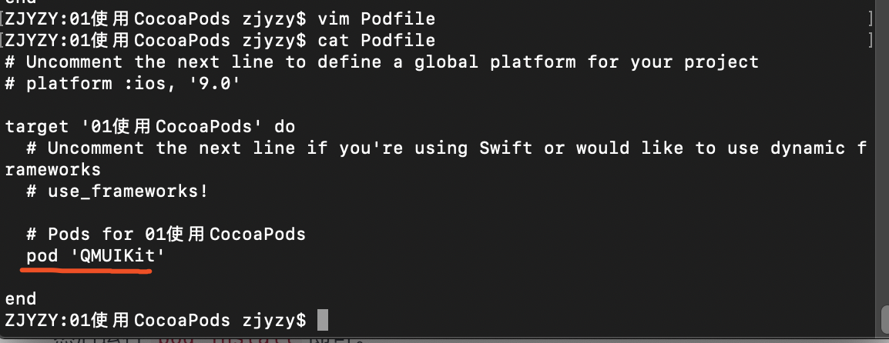
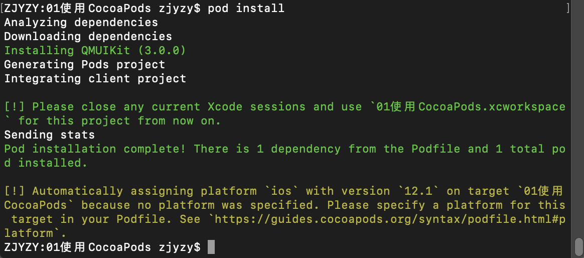
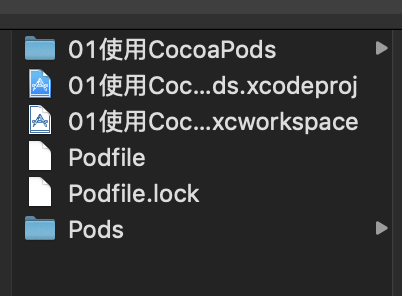
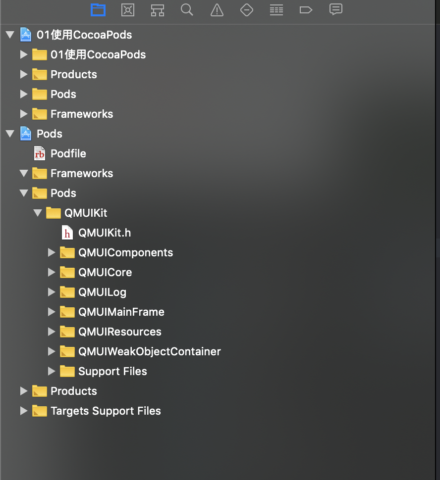
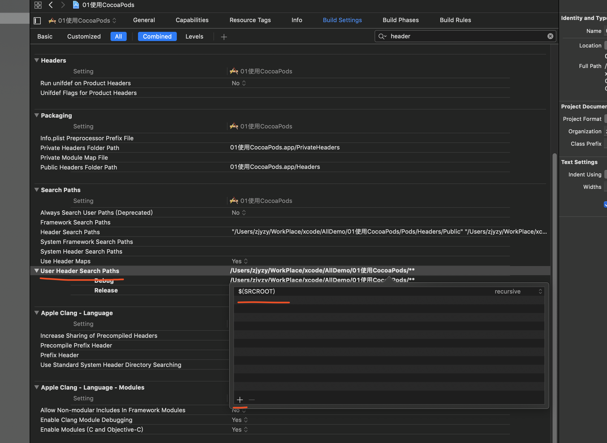
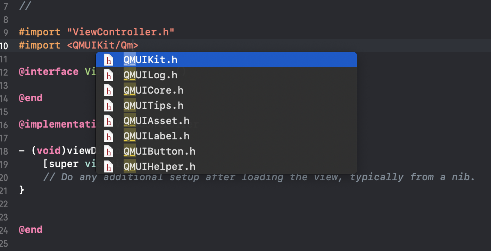

什么是CocoaPods
CocoaPods是专门为iOS工程提供对第三方库的依赖的管理工具，通过CocoaPods，我们可以更方便地管理每个第三方库的版本，而且不需要我们做太多的配置。直观、集中和自动化地管理我们项目的第三方库。
安装CocoaPods
更新gem
1 | sudo gem update --system |
更换镜像
删除自带镜像1
gem sources --remove https://rubygems.org/
更换1
gem sources -a https://gems.ruby-china.com/
查看1
gem sources -l
如图显示即为替换镜像成功

安装
1 | sudo gem install cocoapods |
配置
1 | pod setup |

到这里CocoaPods就已经安装完毕了。
使用CocoaPods
查找第三方库
比如说要查找某个库，直接在终端输入
1 | pod search QMUIKit |
完成后他会自动进入一个新的页面显示搜索结果，上下滑动查看更多，要退出的话按wq就可以了。以后再搜索就不需要建索引了。
引入第三方库到项目中
这里演示第三方库为QMUIKit
打开xcode新建一个项目，打开终端，进入项目路径中。

输入1
pod init
将自动生成一个Podfile文件，也可以自己生成，命令生成有默认模板
vim编写,添加qmuikit

安装第三方库1
pod install

查看项目目录变化
在访达中

原本使用xcodeproj打开项目，但是现在要改变成xcworkspace打开项目了。

这样就可以正常使用该库啦。但是有时候没有只能提示时候，需要更改Build Settings中的User header search paths添加$(SRCROOT)并选择recursive


增加第三方
继续编写Podfile文件添加第三方库然后在执行pod install就可以了
更新第三方
第三方库们都有人在维护升级，我们需要隔断时间就要更新下我们工程中第三方库的版本。只需要终端输入命令pod update就可以了。
如果遇到pod install或者pod update慢的问题，原因在于当执行以上两个命令的时候会升级CocoaPods的spec仓库，加一个参数可以省略这一步，然后速度就会提升不少。加参数的命令如下：
1 | pod install --verbose --no-repo-update |
删除第三方
当我们需要去掉某个第三方库时，只需要在Podfile删除该引入该库的语句，然后执行pod update或者pod install就可以了。
升级CocoaPods
升级CocoaPods版本的命令和安装CocoaPods的命令一样，都是1
sudo gem install cocoapods
卸载CocoaPods
卸载CocoaPods的命令是1
sudo gem uninstall cocoapods
更换gem和pod repo源
gem更换源
1 | $ gem sources --remove https://rubygems.org/ # 移除默认源 |
确保只有gems.ruby-china.org源
pod repo换源
1 | $ pod repo remove master |
我们把它换成清华tuna源
对于旧版的 CocoaPods 可以使用如下方法使用 tuna 的镜像
1 | $ pod repo remove master |
新版的 CocoaPods 不允许用pod repo add直接添加master库了。如果执行pod repo add出现错误
1 | to setup the master specs repo..... |
那么使用以下办法
1 | $ pod repo remove master |
另外，如果Podfile文件中有
1 | source 'https://github.com/CocoaPods/Specs.git' |
也需要把它换成repo的源，否则依然是使用GitHub源
上面的步骤都完成后，即可使用
1 | $ pod install |
CocoaPods Mac App
CocoaPods桌面应用版下载地址：https://cocoapods.org/app
Mac 升级到10.13之后 Cocoapods 不能用
两句话：
1 | sudo gem update --system |
两行解决问题。或者可以尝试重新安装。
ERROR: While executing gem … (Gem::FilePermissionError)
更换语句sudo gem install -n /usr/local/bin加上 项目名
1 | $ sudo gem install -n /usr/local/bin fastlane |
建议的是用 homebrew 再装一个 ruby, 这样 local 归 local, system 归 system. 反正也不大.
参考资料
https://juejin.im/entry/5c067eb56fb9a04a0a5ef583?utm_source=gold_browser_extension
https://guides.cocoapods.org/syntax/podfile.html#podfile
https://www.jianshu.com/p/91f3b9d8f402
https://blog.csdn.net/u014599371/article/details/89916513